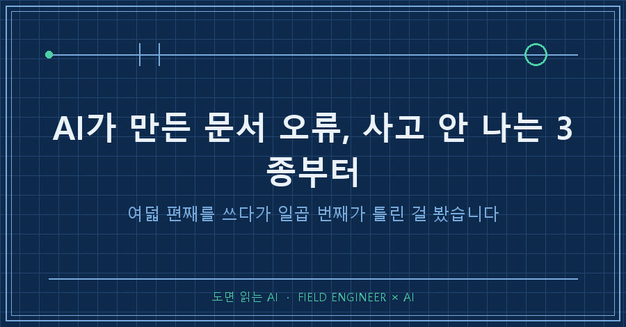
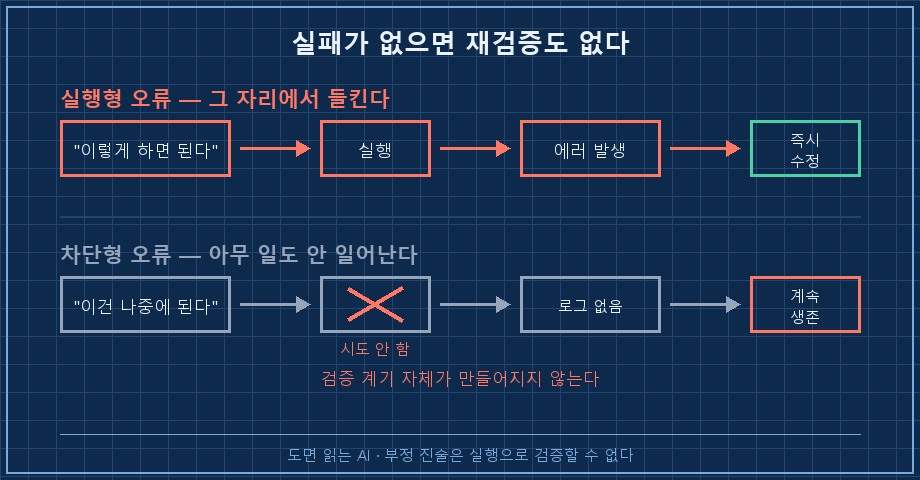
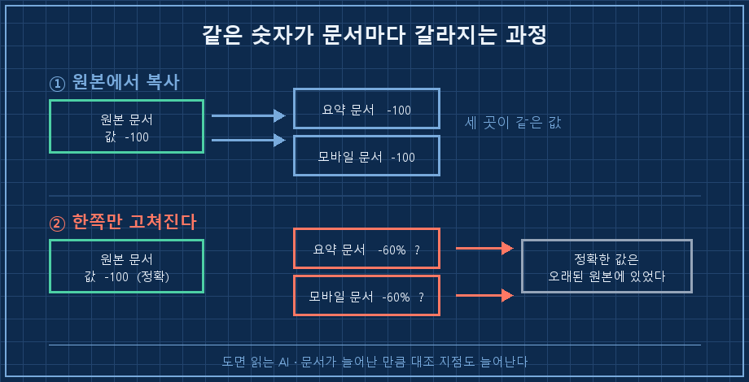
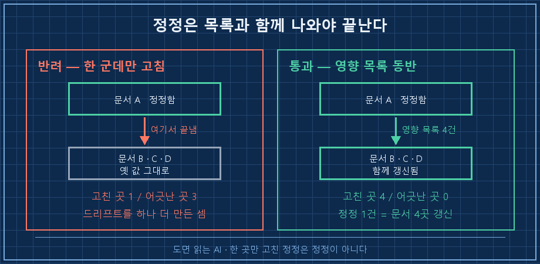

AI가 만든 문서 오류를 잡겠다고 뒤진 게 아니었어요. 개인 가이드 문서를 여덟 편째 쓰다가, 나흘 전에 만든 일곱 번째가 틀린 걸 우연히 봤습니다.
그런데 이 오류가 그동안 저한테 보낸 신호가 하나도 없었어요. 프로그램이 멈춘 것도 아니고, 계산이 어긋난 것도 아니고요. 그냥 제가 할 수 있는 일을 못 하는 줄 알고 안 하고 있었을 뿐입니다.
짧게 답하면 이래요.
AI가 만든 문서 오류 중에 제일 오래 살아남는 건 틀려서 터지는 문장이 아니라 안 하게 만드는 문장입니다. "이건 나중에 됩니다", "이건 안 쓰는 겁니다" 같은 줄이요. 그대로 믿고 안 하니까 실패 기록이 안 남고, 실패가 없으니 검증할 계기도 안 생깁니다. 그래서 저는 검수 순서를 뒤집었어요. 부정 진술부터 훑습니다.
2026년 9월 기준이고요. 개인 취미 기록을 AI로 정리하는 얘기지 특정 도구를 권하는 글은 아닙니다. 다만 AI한테 문서를 여러 편 만들게 해보셨다면 분야를 안 가리고 똑같이 걸리는 함정이에요.
제조 현장에서 제어 쪽 일을 15년째 하고 있습니다. 설비 하나 세우면 검사표 수백 칸을 채우는데, 거기서 배운 게 하나 있어요. 제일 위험한 칸은 "불합격"이 아니라 해당 없음에 체크된 칸입니다. 불합격은 누가 와서 고치기라도 하거든요.
1. 나흘 동안 아무 일도 안 일어난 오류
여덟 번째 문서를 쓰려고 일곱 번째를 다시 열었습니다. 이 부분은 개요만 있고 실제 절차가 빠져 있어서 따로 떼어내려던 참이었어요.
그러다 한 줄에서 걸렸습니다. 어떤 제작 기능이 게임 후반부에 가야 본격적으로 풀린다고 적혀 있었거든요. 새로 쓰는 김에 원래 자료를 다시 열어봤더니, 이랬습니다.
"이 기능은 후반부부터 해금" → 오류
실제: 첫 장 마을부터 전부 배치되어 있음
영향: 나는 이미 조건을 채운 상태였다기록에 제가 남긴 문장이 이겁니다. "그대로 뒀으면 후반부까지 제작을 미룰 뻔했다."
여기서 서늘했던 건 손해 크기가 아니라 발견 경로였어요. 저는 이걸 찾으려고 찾은 게 아닙니다. 다른 문서를 쓰다가 우연히 같은 자리를 두 번 지나간 것뿐이에요. 그 문서를 안 만들었으면 지금도 몰랐을 겁니다.
2. 오류를 셋으로 나눠보니 정리가 됐어요
이걸 계기로 AI가 만든 문서 오류를 성격별로 갈라봤습니다.
| 틀린 문장의 모양 | 시키는 대로 하면 | 언제 들키나 |
|---|---|---|
| "이렇게 하면 된다" | 그 자리에서 실패 | 즉시 |
| "이건 나중에 된다" | 아무 일도 안 일어남 | 우연히 |
| "이건 안 쓰는 물건이다" | 조용히 손해만 쌓임 | 한참 뒤 |
첫 줄은 사실 별로 안 무섭습니다. 시켜보면 바로 깨지니까 그 자리에서 고치게 되거든요. AI가 틀린 명령어를 알려줘도 붙여넣는 순간 에러가 뜨잖아요.
무서운 건 아래 두 줄이에요. 행동을 막는 방향으로 틀리면 실패가 발생하지 않습니다. 실패가 없으면 재검증도 없고요. 그래서 이 두 줄은 누가 일부러 뒤져보기 전까지 그냥 삽니다.
실제로 같은 문서에서 세 번째 유형도 하나 나왔어요. 소모품인 줄 알고 쓰고 있던 물건이, 알고 보니 나중에 뭘 만들 때 들어가는 재료였습니다. 문서에는 그 얘기가 아예 없었어요. 없는 정보는 틀렸다고 표시도 안 됩니다..

3. 같은 숫자가 문서마다 다르게 적혀 있었습니다
한 건 더 있었어요. 이번엔 부정 진술이 아니라 숫자였습니다.
어떤 수치가 한 문서에는 -60%로, 같은 폴더의 다른 문서에는 -100으로 적혀 있었어요. 웃긴 건 정확한 값이 더 오래된 기본 문서에 이미 제대로 있었다는 겁니다. 나중에 만든 요약 문서만 어긋나 있었어요.
$ grep -rn "저항" ./가이드/
가이드/00_기본.md:140 ... -40 / -100
가이드/요약본.md:87 ... -60%이게 어떻게 생기냐면요. 문서를 하나 더 만들 때마다 같은 숫자가 복사됩니다. 그러다 한쪽만 고쳐지면 나머지는 옛날 값을 그대로 안고 남아요. 저는 이걸 기록에 이렇게 적었습니다. "같은 주제 문서가 여러 개면 수치가 조용히 갈라진다."
같은 검사로 다른 문서의 조각 개수 표기도 하나 더 잡혔어요. 명령어 한 줄 돌렸는데 두 건이 나왔습니다!

4. 그래서 검수 시점을 "새 문서 쓸 때"로 못 박았습니다
세 건 다 같은 순간에 잡혔어요. 새 문서를 쓰다가요.
생각해보면 당연합니다. 다 만들어놓은 문서를 아무 이유 없이 다시 여는 사람은 없거든요. 새로 뭘 쓸 때가 유일하게 옛 문서를 열어보는 순간이에요. 그래서 그 순간에 할 일을 세 줄로 고정했습니다.
1. 새 문서에 들어가는 항목이 기존 문서에도 있으면, 그 문단을 열어서 눈으로 대조한다. 요약본을 믿지 말고 원문을 엽니다
2. "안 된다 / 나중에 된다 / 필요 없다" 문장에는 출처를 붙이게 한다. 출처를 못 붙이면 그 줄은 확정이 아니라 추정으로 내립니다
3. 같은 숫자가 두 곳 이상에 있으면 전문 검색으로 전부 뽑아 비교한다. 명령어 한 줄이면 됩니다
두 번째가 핵심이에요. 저는 예전엔 긍정 문장만 검증했거든요. "이렇게 하면 된다"는 시켜보면 되니까요. 그런데 부정 진술은 시켜볼 방법이 없습니다. 안 하는 게 지시니까요. 그러니 출처로 검증하는 수밖에 없어요.
여러분이 AI한테 받은 가이드에도 "이건 아직 안 됩니다" 같은 줄이 있지 않나요? 저는 그 줄들이 제일 오래 안 열어본 자리였습니다.
그래서 제대로 돌았는지는 이렇게 봅니다. 다음에 AI한테 문서를 고치게 시켰을 때 세 가지를 확인하시면 돼요.
- 정정 1건이 나왔을 때 같이 고쳐야 할 다른 문서 목록이 함께 나오는가 (이번엔 네 군데가 딸려 나왔어요)
- 부정 진술 옆에 출처나 "추정" 표시가 붙어 있는가
- 같은 수치가 여러 문서에 있을 때 전부 같은 값인가
세 개가 다 맞으면 그 문서는 일단 통과입니다. 첫 줄이 특히 중요해요. 한 군데만 고치고 끝내면 그건 정정이 아니라 드리프트를 하나 더 만든 거니까요.

여기서 나올 법한 질문 둘
Q. 그럼 AI가 만든 문서를 다 못 믿는 건가요?
그건 아니에요. 이번에 여덟 편 중 틀린 게 세 줄이었으니 나머지는 멀쩡했습니다. 문제는 어디가 틀렸는지 표시가 안 난다는 거예요. 그래서 전부를 의심하는 대신 의심할 자리를 정해두는 쪽으로 갔습니다. 부정 진술, 그리고 두 곳 이상에 적힌 숫자. 이 둘만 훑어도 이번엔 세 건이 다 걸렸어요.
Q. AI가 자료를 못 찾으면 어떻게 하나요?
실제로 이번에도 참고하던 사이트 한 곳이 자동 접근을 막아서 원문 확인이 막힌 적이 있어요. 그때는 다른 경로로 우회하고, 그래도 안 되는 항목은 단정하지 말고 "미검증"으로 남기게 했습니다. 대신 "게임 안에서 직접 보는 게 최종"이라는 예외 규칙을 문서에 같이 적어뒀어요. 못 찾은 걸 못 찾았다고 적는 문서가, 그럴듯하게 채워 넣은 문서보다 훨씬 안전합니다.
정리하면
- 제일 늦게 잡히는 AI가 만든 문서 오류는 틀려서 터지는 줄이 아니라 안 하게 만드는 줄이다
- "안 된다 / 나중에 된다 / 필요 없다"에는 출처를 붙이게 하고, 없으면 추정으로 내린다
- 같은 숫자가 여러 문서에 있으면 전문 검색으로 한 번에 뽑아 비교한다
- 검수 타이밍은 새 문서를 쓸 때다. 다 쓴 문서를 그냥 다시 여는 일은 안 생긴다
- 정정 1건에는 영향 문서 목록이 따라붙어야 끝난 것이다
문서가 여덟 편이 될 때까지 저는 계속 새로 쓰기만 했어요. 늘리는 동안 뒤에서 조용히 갈라지고 있었던 거고요. 그날 이후로는 한 편을 새로 쓸 때마다 앞 문서 하나를 반드시 열고 시작합니다!
고쳐 쓴 문서의 정정 전후는 makefield.ai에 나란히 올려두고 있어요.
태그: #AI가만든문서오류 #AI문서교차검증 #AI정보오류확인 #AI가안된다고할때 #AI결과물검수 #AI팩트체크 #AI할루시네이션 #AI에게일시키기 #AI자동화구축 #AI지식관리 #AI리서치 #AI활용법 #AI실무활용 #개인AI에이전트 #도면읽는AI